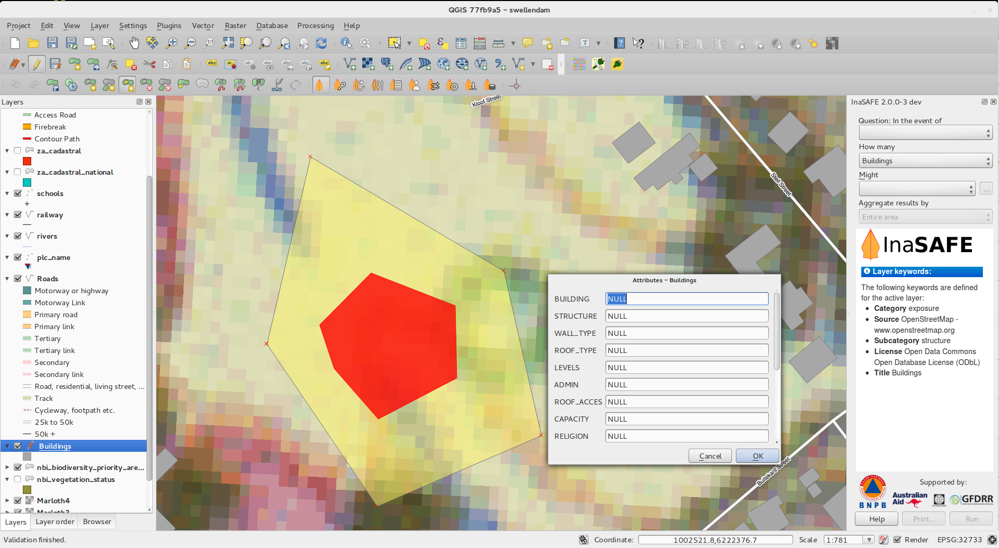
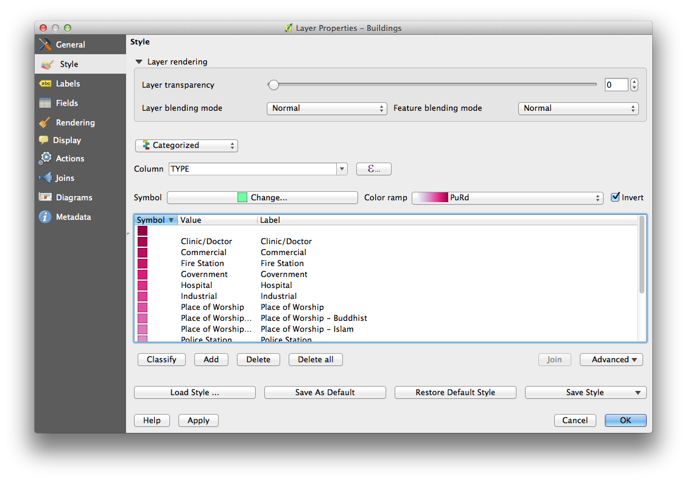

Elenco cambiamenti per QGIS 2.2¶
Elenco cambiamenti per il prossimo rilascio di QGIS 2.2.0. L’attenzione per questo rilascio è stata messa principalmente sulla pulizia e sulle prestazioni: abbiamo aggiunto molte nuove funzioni, modifiche e miglioramenti per rendere l’interfaccia più coerente e professionale (e si spera anche più facile da usare). Il compositore di stampe (usato per realizzare mappe pronte per la stampa) ha richiesto molto lavoro per renderlo una piattaforma più usabile nel realizzare splendidi prodotti cartografici.
Ogni volta che nuove funzioni vengono aggiunte al software, queste introducono la possibilità di nuovi errori - se incontrate qualche problema con questa release, per favore aprite un ticket sul QGIS Bug Tracker <http://hub.qgis.org>`_.
Vogliamo ringraziare gli sviluppatori, i documentatori, i tester e tutti quelli che hanno dedicato il proprio tempo per migliorare QGIS.
From the QGIS community we hope you enjoy this release! If you wish to donate time, money or otherwise get involved in making QGIS more awesome, please wander along to qgis.org and lend a hand!
Infine vorremmo ringraziare i nostri sponsor ufficiali per il loro prezioso supporto finanziario:
- GOLD Sponsor: Asia Air Survey, Japan
- SILVER Sponsor: G.A.I.A. mbH, Germany
- SILVER Sponsor: Provincia di Vorarlberg, Austria
- BRONZE Sponsor: www.molitec.it, Italy
- BRONZE Sponsor: www.argusoft.de, Germany
A current list of donors who have made financial contributions large and small to the project can be seen on our donors list.
If you would like to make a donation or sponsor our project, please visit our sponsorship page for details. QGIS is Free software and you are under no obligation to do so. Sponsoring QGIS helps us to fund our six monthly developer meetings, maintain project infrastructure and fund bug fixing efforts.
- Applicazioni e Opzioni del progetto
- Fornitori di dati
- Digitalizzazione
- Generale
- Compositore di stampe
- Novità: miglioramenti al contorno zebrato della mappa
- Novità: supporto alla rotazione degli elementi
- Novità: scala del compositore e miglioramenti al righello
- Novità: generazione del file world
- Novità: lavorare con più oggetti
- Novità: miglioramenti nell’atlante
- Novità: miglioramenti nella selezioni degli oggetti
- Novità: navigazione migliorata tra i compositori
- Novità: miglioramenti allo stile delle pagine e forme
- QGIS Server
- Simbologia
- Novità: supporto al riempimento graduato
- Novità: Supporto etichette per la tavolozza raster
- Novità: possibilità di invertire le scale di colori
- Novità: Copia e incolla nello stile tramite regole
- Novità: Semplificazione geometria “al volo
- Novità: Impostazione punti di ancoraggio per indicatori
- Novità: Mappe tematiche usando un’espressione
- Novità: supporto alle espressioni nei diagrammi dei simboli per la dimensione e gli attributi
- Novità: Regola ELSE nello stile di rappresentazione tramite regole
- Novità: Disegna linea solo all’interno del poligono
- Interfaccia utente
Applicazioni e Opzioni del progetto¶
Novità: misurazioni in miglia nautiche¶
Per i navigatori, è possibile ora misurare le distanze in miglia nautiche. Per poterlo fare, utilizza le opzioni su «Impostazioni -> Opzioni -> Strumenti mappa»

Fornitori di dati¶
Novità: supporto alle relazioni uno a molti¶
Questa versione ha la possibilità di definire relazioni 1:n. Le relazioni sono definite nella finestra di dialogo delle proprietà del progetto. Con le relazioni per un layer, appare un nuovo elemento di interfaccia utente nella visualizzazione modulo (ad esempio, quando si identifica una geometria e si apre il suo modulo) elencherà le entità correlate. Questo fornisce un modo potente per esprimere ad esempio la storia di ispezione su una lunghezza di tubazione o segmento di strada. Potete trovare maggiori informazioni su supporto relazioni qui.

Novità: strumento di esportazione DXF¶
Un nuovo strumento per l’esportazione DXF di è stato aggiunto al menu Progett

Novità: incolla come nuovo vettore¶
Si tratta di un’attività comune in un GIS fare una selezione e quindi creare un nuovo layer dalla selezione. In QGIS era già possibile fare «salva selezione come»` per salvare un livello dalla selezione, e ora offre la funzionalità che consente di creare un nuovo file di layer o layer di memoria dal contenuto degli appunti. Basta selezionare alcune geometrie, copiarle negli appunti e quindi fare `` Modifica -> Incolla geometrie come`` e scegliere vettore o «memoria» dal sottomenu. La parte migliore di questa nuova caratteristica è che, se avete qualche stringa Well Known Text (WKT) disponibile negli appunti da un’altra applicazione, si può semplicemente incollarli in QGIS come nuovo livello.

Novità: legenda WMS nella TOC e nel compositore di stampe¶
Prima di QGIS 2.2, il fornitore di dati WMS non era in grado di mostrare una legenda. Adesso è possibile farlo.
Cliccando sulla leggenda del layer si aprirà una cornice con la leggenda a piena risoluzione. La leggenda visualizza informazioni contestuali in base alla scala corrente. La leggenda WMS verrà visualizzato solo se il server WMS ha la capacità GetLegendGraphic. Risoluzione leggenda può essere modificato cambiando le opzioni Mappa & Legenda.

Digitalizzazione¶
Novità: strumento di digitalizzazione riempi buco¶
Questo nuovo strumento è utilizzato per spezzare i buchi in poligoni e riempirli automaticamente con nuove geometrie. Se si tiene premuto «Ctrl» quando hai finito di efettuare le modifiche, gli attributi verranno preso dalla geometria originale.

Generale¶
Novità: espressioni recenti salvate¶
Il costruttore di espressioni ora ricorderà le ultime 20 espressioni scritte.

Novità: incolla WKT dagli appunti¶
QGIS ora può incollare e creare una nuova geometria basata su una stringa WKT che si trova negli Appunti. È inoltre possibile creare un nuovo livello selezionando Modifica -> Incolla come -> nuova memoria Layer
Compositore di stampe¶
Novità: miglioramenti al contorno zebrato della mappa¶
Nel compositore di stampe, puoi adesso scegliere i colori del bordo zebrato della mappa.

Novità: supporto alla rotazione degli elementi¶
Ogni elemento, inclusi barra di scala, tabelle e legende possono essere ruotate. Per esempio puoi ruotare un’etichetta sulla composizione per ottimizzare la vista della mappa. Puoi anche ridimensionare facilmente le dimensioni degli elementi ruotati.

Novità: scala del compositore e miglioramenti al righello¶
L’aspetto dei righelli è stato migliorato aggiustando la logica della scala e facendo in modo che i righelli usino testi ruotati. È anche disponibile una nuova azione per mostrare/nascondere i righelli. Puoi visualizzare la pagina al 100% dello zoom usando il nuovo strumento Zoom al 100%. La finestra del compositore permette ora di cambiare velocemente lo zoom grazie a una combobox nella barra di stato. Inoltre è stato aggiunto anche un indicatore che indica con precisione la posizione in pixel del tuo cursore. I pulsanti [Chiudi] e [Aiuto] sono stati rimossi dalla parte inferiore del compositore in modo da ampliare al massimo lo spazio di lavoro.

Novità: generazione del file world¶
Puoi creare mappe georeferenziate anche dal compositore di stampe! Scegli la mappa che vuoi esportare come file PNG. Verrà creato anche un world file che ti permetterà di importare la tua composizione di stampa in QGIS come raster georeferenziato!

Novità: lavorare con più oggetti¶
Puoi muovere e ridimensionare più elementi contemporaneamente. Tenendo premuto il tasto Shift mentre ridimensioni un oggetto, verrà mantenuto il rapporto di grandezza, tieni premuto il tasto Ctrl per ridimensionare l’oggetto partendo dal centro. Usa gli stessi tasti anche per muovere gli oggetti: tenendo premuto Shift gli oggetti si muoveranno solo orizzontalmente o verticalmente, mentre tenendo premuto Ctrl disabiliterai temporaneamente lo snap dell’oggetto. Infine, se tieni premuto Shift e selezioni più oggetti, li puoi ridimensionare tutti insieme.
Novità: miglioramenti nell’atlante¶
Puoi ora vedere un’anteprima della pagine dell’atlante che stai per creare. Quando sei in modalità anteprima puoi creare l’output di quella pagina senza generare l’intero atlante e puoi anche aggiustare la scala e l’estensione di ogni elemento. Le impostazioni dell’atlante sono state spostate dal pannello dell’atlante a quello delle proprietà della mappa; in questo modo puoi controllare più mappe direttamente dalla scheda di generazione dell’atlante. È disponibile anche una nuova opzione per centrare la panoramica, opzione che si rivela molto utile quando si vuole generare un atlante. Sono anche disponibili più opzioni direttamente dalla scheda di generazione atlante così da poter migliorare la simbologia a seconda che un elemento sia o meno un elemento dell’atlante. Leggere questo articolo per ulteriori informazioni.

Novità: miglioramenti nella selezioni degli oggetti¶
Puoi selezionare più oggetti contemporaneamente tenendo premuto il tasto sinistro del mouse e includendo nel rettangolo gli oggetti desiderati. È disponibile anche una scorciatoia da tastiera per aggiungere (tenendo premuto Shift) e sottrarre (tenendo premuto Ctrl) elementi alla selezione. Clicca Shift su un elemento già selezionato per rimuoverlo dalla selezione. Ci sono molte altre scorciatoie per selezionare tutti gli oggetti, annullare o invertire una selezione. Puoi anche selezionare oggetti nascosti dietro altri oggetti cliccando Ctrl su un oggetto oppure usando l’opzione “Seleziona il prossimo oggetto Sopra/Sotto” nel nuovo menu modifica del compositore.
Novità: miglioramenti allo stile delle pagine e forme¶
Puoi cambiare lo sfondo della composizione usando l’intera simbologia di QGIS! Puoi esportare una composizione con uno sfondo trasparente (o semi-trasparente). Puoi applicare lo stesso stile che usi per i poligoni anche alle forme (rettangolo, ellisse e triangolo). Puoi usare le impostazioni definite dai dati dell’atlante per stilizzare lo sfondo e le forme! Infine è disponibile un’opzione per arrotondare gli angoli delle forme rettangolari.
QGIS Server¶
Novità: supporto al WCS¶
QGIS Server supporta già diversi standard, inclusi Web Map Service (WMS versioni 1.3.0 e 1.1.1), Web Feature Service (WFS versione 1.0.0) e Web Feature Service con Transazione (WFS-T). Con la nuova versione di QGIS, puoi caricare raster usando lo standard Web Coverage Service (WCS versione 1.0.0).

Simbologia¶
Novità: supporto al riempimento graduato¶
questa nuova funzionalità ti permetterà di creare delle mappe stupende! Sono disponibili molte opzioni che garantiscono un’eccellente flessibilità in funzione di come scegli di applicare i gradienti ai vari elementi. Fra le varie opzioni:
- Riempimento a due colori oppure a scala di colori
- Sorgente del gradiente basata sulla mappa o sull’oggetto
- Gradiente originato dal centroide di una geometria
- Tipo di gradienti conico, lineare o radiale
- Proprietà definite dai dati (cioè puoi usare un’espressione o una colonna
Ulteriori informazioni qui.

Novità: Supporto etichette per la tavolozza raster¶
Supporto etichette per la tavolozza raster: se hai categorizzato il raster con una tavolozza (per esempio una mappa di copertura del suolo) puoi assegnare le varie etichette che verranno visualizzate nella legenda e nel compositore di stampe.

Novità: possibilità di invertire le scale di colori¶
è stata aggiunta la possibilità di invertire la scala di colori.

Novità: Copia e incolla nello stile tramite regole¶
Ora puoi cliccare con il tasto destro su una regola che hai creato e copiarla e incollarla come una nuova regola.

Novità: Semplificazione geometria “al volo¶
QGIS 2.2 introduce il supporto per la semplificazione “al volo” delle geometrie. Questa funzionalità velocizza la creazione di geometrie specialmente a piccole scale. Puoi facilmente attivarla o disattivarla dalle proprietà del vettore, ma puoi anche abilitarla in modo predefinito per ogni vettore aggiunto. Nota: la semplificazione delle geometrie, in alcuni casi, può creare degli artefatti; ovvero si potranno generare dei poligoni frammentati e la visualizzazione basata su offset potrebbe risultare leggermente inaccurata.

Novità: Impostazione punti di ancoraggio per indicatori¶
Se hai applicato lo stile indicatore al tuo vettore (per esempio un simbolo SVG per un vettore di punti) puoi scegliere quale parte dell’immagine deve corrispondere al “punto di ancoraggio”. Per esempio, puoi decidere che il punto in basso a sinistra dell’immagine corrisponde alla posizione dell’elemento. Puoi anche utilizzare le proprietà definite dai dati in modo da impostare un valore della tabella degli attributi come valore predefinito.

Novità: Mappe tematiche usando un’espressione¶
Puoi creare mappe tematiche categorizzate o graduate usando il risultato di un’espressione. Puoi usare il costruttore di espressioni per scegliere un attributo che andrà a creare la mappa tematica (finestra di dialogo Proprietà del vettore). Non hai quindi più bisogno di creare una nuova colonna nella tabella degli attributi di un vettore e sceglierla in un secondo momento per la categorizzazione.

Novità: supporto alle espressioni nei diagrammi dei simboli per la dimensione e gli attributi¶
Ora è possibile inserire un’espressione per definire la dimensione e gli attributi nei diagrammi. Per più informazioni, leggere qui Pull 1039

Novità: Regola ELSE nello stile di rappresentazione tramite regole¶
Questa funzionalità aggiunge automaticamente la regola ELSE se nessuna altra regola corrisponde a quel livello. L’istanza ELSE può essere nidificata in altre regole. Per esempio:
Un esempio:
type = 'water' (style grey)ELSE (style red)
Novità: Disegna linea solo all’interno del poligono¶
Puoi scegliere di visualizzare le linee solamente all’interno del poligono (questo impedisce una sovrapposizione con i poligoni vicini).
Ulteriori informazioni nella seconda parte di questo articolo.
Interfaccia utente¶
Novità: finestre delle proprietà migliorate¶
Tutti i sotto-menu sono stati aggiornati in modo che risultino più piacevoli alla vista e maggiormente accessibili. Anche se questo è un cambiamento esclusivamente estetico, dovrebbe facilitare la navigazione fra i vari menu.

Novità: miglioramenti alla finestra di dialogo delle espressioni¶
Abbiamo aggiustato la finestra delle espressioni: gli utenti più esperti possono nascondere i pulsanti degli operatori. Puoi modificare lo spazio presente fra la lista delle funzioni e l’aiuto delle funzioni a anche fra l’area dell’espressione e la lista delle funzioni. Leggere qui for details.

Novità: nuove scorciatoie di tastiera¶
Abbiamo aggiornato alcune scorciatoie da tastiera in modo da rendere più efficiente il completamento di lavori ripetitivi.
- Ctrl-d: Rimuovi i vettori selezionati dalla TOC
- >: seleziona il vertice successivo quando si usa lo strumento vertici
- <: Seleziona il vertice precedente quando si usa lo strumento vertici
- Canc o Elimina: Cancella le geometrie selezionate (puoi anche annullare queste azioni), o i nodi selezionati quando usi lo strumento nodi
- F5: Aggiorna la mappa (al posto di Ctrl-r)
Vedere anche Issue 9094 e Pull Request 1010 for more details.